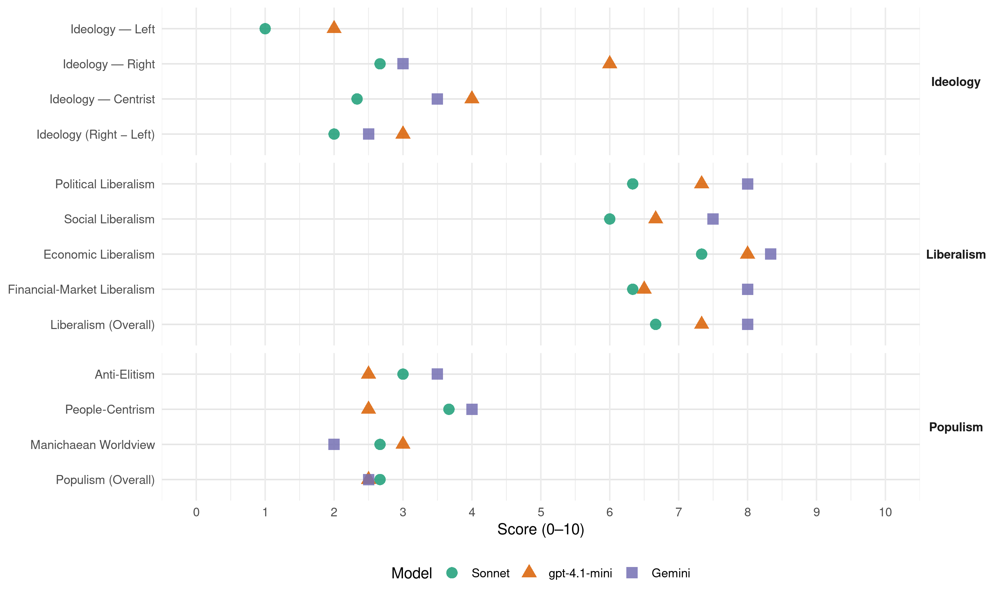

National (New Zealand, 2020)
manifesto_id 64620_202010
Get full text: This site shows derived annotations and short verbatim quotes only. The full manifesto text is © Manifesto Project / WZB — obtain it via manifesto-project.wzb.eu using the manifesto_id above.
Headline scores
| Dimension | Sonnet | gpt-4.1-mini | Gemini |
|---|---|---|---|
| Populism (Overall) | 2.7 | 2.5 | 2.5 |
| Anti-Elitism | 3.0 | 2.5 | 3.5 |
| People-Centrism | 3.7 | 2.5 | 4.0 |
| Manichaean Worldview | 2.7 | 3.0 | 2.0 |
| Ideology (Right − Left) | 2.0 | 3.0 | 2.5 |
| Liberalism (Overall) | 6.7 | 7.3 | 8.0 |
| Political Liberalism | 6.3 | 7.3 | 8.0 |
| Social Liberalism | 6.0 | 6.7 | 7.5 |
| Economic Liberalism | 7.3 | 8.0 | 8.3 |
| Financial-Market Liberalism | 6.3 | 6.5 | 8.0 |
Evidence per dimension
Economic Liberalism
Gemini · score 9.0 · verified · chunk 1
“reduce barriers, costs and uncertainty for the private sector”
understand that the only sustainable way to create new jobs is to reduce barriers, costs and uncertainty for the private sector and in particular small businesses. You can read our
Gemini · score 8.0 · verified · chunk 2
“determination of the private sector”
only be possible with the hard work, ingenuity and determination of the private sector.
Gemini · score 8.0 · verified · chunk 3
“reduce regulatory burden and give farmers confidence”
Backing our farmers - Agriculture & Horticulture A National Government will reduce regulatory burden and give farmers confidence for the future.
gpt-4.1-mini · score 8.0 · verified · chunk 1
“National will cut taxes for hard-working Kiwis”
National will cut taxes for hard-working Kiwis. National will increase tax thresholds by lifting the bottom threshold from $14,000 to $20,000, the middle threshold from $48,000 to $64,000 and the top threshold from $70,000 to $90,000. These changes will be in place from 1 December 2020 to 31 March 2022.
gpt-4.1-mini · score 8.0 · verified · chunk 2
“National will repeal the Resource Management Act and replace it with an Environmental Standards Act”
National will: Repeal the Resource Management Act (RMA) and replace it with an Environmental Standards Act and Planning and Development Act. Allow skilled workers and Recognised Seasonal Employer (RSE) workers to enter New
gpt-4.1-mini · score 8.0 · verified · chunk 3
“Pursue an active free trade agenda to open up new markets”
Pursue an active free trade agenda to open up new markets for New Zealand’s food and fibre products. Enforce stronger penalties for biosecurity offences. Build the infrastructure to ensure better connectivity for rural communities.
Sonnet · score 8.0 · verified · chunk 1
“reduce barriers, costs and uncertainty for the private sector”
We understand that the only sustainable way to create new jobs is to reduce barriers, costs and uncertainty for the private sector and in particular small businesses.
Sonnet · score 7.0 · verified · chunk 2
“competitive and well-regulated energy markets”
National believes competitive and well-regulated energy markets support households and the transition to a low-emissions economy.
Sonnet · score 7.0 · verified · chunk 3
“reduce regulatory burden and give farmers confidence”
A National Government will reduce regulatory burden and give farmers confidence for the future. Agriculture is responsible for 60 per cent
Financial-Market Liberalism
Gemini · score 8.0 · verified · chunk 1
“Encouraging KiwiSaver providers to invest a small portion of their total funds in appropriate private equity”
business continuity test (rather than ownership test) to allow the carry forward of tax losses. Encouraging KiwiSaver providers to invest a small portion of their total funds in appropriate private equity/expansion capital opportunities involving New Zealand companies.
Gemini · score 8.0 · verified · chunk 2
“provide professional advice and finance models”
The new National Infrastructure Bank will be able to provide professional advice and finance models to enable the delivery of vital new infrastructure.
gpt-4.1-mini · score 7.0 · verified · chunk 1
“National will create a new Crown Financial Institution, named the National Infrastructure Bank”
National will create a new Crown Financial Institution, named the National Infrastructure Bank to provide finance and advice to central and local Government infrastructure projects. It will take an inter-generational, long term approach to finance of infrastructure in New Zealand.
gpt-4.1-mini · score 6.0 · verified · chunk 3
“National will double the Serious Fraud Office’s budget”
National will double the Serious Fraud Office’s budget, from its present total budget for the 2020/21 financial year of $12.7 million to $25 million a year. You can read our full Serious Fraud and Anti-corruption Agency Policy Factsheet here.
Sonnet · score 7.0 · verified · chunk 1
“Better Access to Capital for New and Existing Small Businesses”
Our Small Business Package is divided into five parts:… Better Access to Capital for New and Existing Small Businesses.
Sonnet · score 6.0 · verified · chunk 2
“stamp out serious financial crime”
New Zealand’s most successful crime fighting agency will get the resources it needs to deliver on its stated role as the ’lead law enforcement agency for investigating and prosecuting serious financial crime, including bribery and corruption.
Sonnet · score 6.0 · verified · chunk 3
“world of investment, accounting and banking”
office’s mandate and focus goes well beyond the world of investment, accounting and banking. It also tackles fraud, bribery and corruption
Political Liberalism
Gemini · score 8.0 · verified · chunk 1
“advance democracy, protect human rights”
Everything we do on the world stage must reflect their interests and values. Using the tools of diplomacy to advance democracy, protect human rights, and promote inclusiveness around the world
Gemini · score 8.0 · verified · chunk 2
“environmental legal and regulatory framework that is less complex”
Repeal the RMA and implement an environmental legal and regulatory framework that is less complex and provides more certainty to all stakeholders.
Gemini · score 8.0 · verified · chunk 3
“prosecuting serious financial crime, including bribery and corruption”
needs to deliver on its stated role as the ‘lead law enforcement agency for prosecuting serious financial crime, including bribery and corruption. National will double the Serious Fraud Office’s budget
gpt-4.1-mini · score 7.0 · verified · chunk 1
“National’s foreign policy is based on five interlocking principles”
National’s foreign policy is based on five interlocking principles. New Zealand foreign policy under National will be: Outward focused to deliver New Zealand security and prosperity. Independent and agile in advancing our interests. Credible positioning of New Zealand as a serious partner. Values based and underpinned by our commitment to democracy and freedom. Bipartisan and reaching out to engage all New Zealanders.
gpt-4.1-mini · score 8.0 · verified · chunk 2
“National will increase funding to PHARMAC and create a rare disorder fund”
National will: Increase funding to PHARMAC and create a rare disorder fund worth $20 million over four years and a dedicated cancer drug fund worth $200 million over four years. Institute an elective surgery commitment that means everyKiwi that needs elective surgery will have it done withinfour monthsof the decision to treat.
gpt-4.1-mini · score 7.0 · verified · chunk 3
“National will get the Court system moving quickly to clear a backlog”
National will get the Court system moving quickly to clear a backlog of disputes, modernise its operations through technology and make better use of existing resources. National recognises the value of specialist courts and will extend their operations.
Sonnet · score 7.0 · verified · chunk 1
“advance democracy, protect human rights”
Using the tools of diplomacy to advance democracy, protect human rights, and promote inclusiveness around the world.
Sonnet · score 6.0 · verified · chunk 2
“Independent Police Conduct Authority”
Increase funding and resourcing for the Independent Police Conduct Authority. Increase allocation of Police to rural areas
Sonnet · score 6.0 · verified · chunk 3
“Increase funding and resourcing for the Independent Police Conduct Authority”
Increase funding and resourcing for the Independent Police Conduct Authority. Increase allocation of Police to rural areas
Liberalism (Overall)
Gemini · score 8.0 · verified · chunk 1
“reduce barriers, costs and uncertainty for the private sector”
understand that the only sustainable way to create new jobs is to reduce barriers, costs and uncertainty for the private sector and in particular small businesses. You can read our
Gemini · score 8.0 · verified · chunk 2
“determination of the private sector”
only be possible with the hard work, ingenuity and determination of the private sector.
Gemini · score 8.0 · verified · chunk 3
“reduce regulatory burden and give farmers confidence”
Backing our farmers - Agriculture & Horticulture A National Government will reduce regulatory burden and give farmers confidence for the future.
gpt-4.1-mini · score 7.0 · verified · chunk 1
“National will create a new Crown Financial Institution, named the National Infrastructure Bank”
National will create a new Crown Financial Institution, named the National Infrastructure Bank to provide finance and advice to central and local Government infrastructure projects. It will take an inter-generational, long term approach to finance of infrastructure in New Zealand.
gpt-4.1-mini · score 8.0 · verified · chunk 2
“National will increase funding to PHARMAC and create a rare disorder fund”
National will: Increase funding to PHARMAC and create a rare disorder fund worth $20 million over four years and a dedicated cancer drug fund worth $200 million over four years. Institute an elective surgery commitment that means everyKiwi that needs elective surgery will have it done withinfour monthsof the decision to treat.
gpt-4.1-mini · score 7.0 · verified · chunk 3
“National will get the Court system moving quickly to clear a backlog”
National will get the Court system moving quickly to clear a backlog of disputes, modernise its operations through technology and make better use of existing resources. National recognises the value of specialist courts and will extend their operations.
Sonnet · score 7.0 · verified · chunk 1
“reduce barriers, costs and uncertainty for the private sector”
We understand that the only sustainable way to create new jobs is to reduce barriers, costs and uncertainty for the private sector and in particular small businesses.
Sonnet · score 6.0 · verified · chunk 2
“Developing the world’s most tech-friendly regulation”
Developing the world’s most tech-friendly regulation. With about 50,000 Kiwis returning home because of the Covid-19 pandemic, now is the time to harness their talent
Sonnet · score 7.0 · verified · chunk 3
“reduce regulatory burden and give farmers confidence”
A National Government will reduce regulatory burden and give farmers confidence for the future. Agriculture is responsible for 60 per cent
Anti-Elitism
Gemini · score 3.0 · verified · chunk 1
“Labour’s first instinct in times of economic crisis is to raise your taxes”
getting our debt back down. Labour’s first instinct in times of economic crisis is to raise your taxes. So we are looking at Kiwis without jobs
Gemini · score 4.0 · verified · chunk 2
“rectify the shameful actions of the Labour-led Government”
first-generation Roads of National Significance - will rectify the shameful actions of the Labour-led Government, which cut $5 billion from the state highway budget
gpt-4.1-mini · score 2.0 · verified · chunk 1
“Labour’s first instinct in times of economic crisis is to raise your taxes”
Labour’s first instinct in times of economic crisis is to raise your taxes. So we are looking at Kiwis without jobs, and those who have one paying higher taxes. National has a better plan, to increase investment in quality infrastructure, to give businesses the confidence to grow and create jobs, to pay down debt and to temporarily reduce your taxes.
gpt-4.1-mini · score 3.0 · verified · chunk 3
“The SFO has statutory powers that other New Zealand crime fighting agencies do not”
The SFO has statutory powers that other New Zealand crime fighting agencies do not, including powers to compel the production of information and to require witnesses and suspects to answer any questions put to them without the right to silence. But these powers aren’t being given enough opportunity to be used.
Sonnet · score 3.0 · verified · chunk 1
“Labour’s sole economic idea is more government spending”
National has a comprehensive five point plan to rescue the economy… Labour’s sole economic idea is more government spending, more debt and higher taxes.
Sonnet · score 4.0 · verified · chunk 2
“Where Labour talks, National delivers”
The Southern Transport Package will increase safety in the region, improve resilience, and increase economic opportunities for southern residents. I am looking forward to delivering this package in government. Where Labour talks, National delivers.
Sonnet · score 2.0 · verified · chunk 3
“Labour took farmers for granted”
Labour took farmers for granted. Now as we face an economic crisis we are seeing just how foolish Labour’s treatment of farmers was.
Ideology — Centrist
Gemini · score 4.0 · verified · chunk 1
“National will let New Zealanders keep more of what they earn”
spending, something Labour has failed at (eg KiwiBuild, Light Rail, Green School). National will let New Zealanders keep more of what they earn. It’s your economy and your future, we
Gemini · score 3.0 · verified · chunk 2
“rectify the shameful actions of the Labour-led Government”
first-generation Roads of National Significance - will rectify the shameful actions of the Labour-led Government, which cut $5 billion from the state highway budget
gpt-4.1-mini · score 4.0 · verified · chunk 1
“It’s your economy and your future, we need to safeguard it”
National will let New Zealanders keep more of what they earn. It’s your economy and your future, we need to safeguard it. National has a proven track record of effective economic management in times of crisis.
gpt-4.1-mini · score 4.0 · verified · chunk 3
“committed to keeping New Zealanders safe and that means giving Police the tools”
committed to keeping New Zealanders safe and that means giving Police the tools and resourcing they need to do their job. New Zealand’s frontline Police officers are some of the most professional in the world.
Sonnet · score 2.0 · verified · chunk 1
“It’s your economy and your future”
National will let New Zealanders keep more of what they earn. It’s your economy and your future, we need to safeguard it.
Sonnet · score 3.0 · verified · chunk 2
“National is the party of law and order”
National is the party of law and order. We will ensure New Zealand is a safe place to live, work and raise a family.
Sonnet · score 2.0 · verified · chunk 3
“National celebrates the valuable contribution ethnic communities”
National celebrates the valuable contribution ethnic communities make to our economic, cultural and social life.
Ideology — Left
gpt-4.1-mini · score 2.0 · verified · chunk 1
“Labour’s first instinct in times of economic crisis is to raise your taxes”
Labour’s first instinct in times of economic crisis is to raise your taxes. So we are looking at Kiwis without jobs, and those who have one paying higher taxes. National has a better plan, to increase investment in quality infrastructure, to give businesses the confidence to grow and create jobs, to pay down debt and to temporarily reduce your taxes.
gpt-4.1-mini · score 2.0 · verified · chunk 3
“Social Investment approach into the Corrections system again”
National will incorporate a Social Investment approach into the Corrections system again. We will prioritise both rehabilitation and reintegration, through Clean Start, focusing on first-time remandees, and make sure all prisons provide education/work opportunities.
Sonnet · score 1.0 · verified · chunk 1
“build a strong economy that provides a good standard of living”
National’s goal is to build a strong economy that provides a good standard of living for all New Zealanders and opportunities for future generations.
Sonnet · score 1.0 · verified · chunk 2
“reduce child poverty by establishing a meaningful reduction target”
Drive a reduction in child poverty by establishing a meaningful reduction target for what really counts - the number of children suffering material hardship.
Sonnet · score 1.0 · verified · chunk 3
“reduce regulatory burden and give farmers confidence”
A National Government will reduce regulatory burden and give farmers confidence for the future.
Ideology (Right − Left)
Gemini · score 3.0 · verified · chunk 1
“National will let New Zealanders keep more of what they earn”
spending, something Labour has failed at (eg KiwiBuild, Light Rail, Green School). National will let New Zealanders keep more of what they earn. It’s your economy and your future, we
Gemini · score 2.0 · verified · chunk 2
“rectify the shameful actions of the Labour-led Government”
first-generation Roads of National Significance - will rectify the shameful actions of the Labour-led Government, which cut $5 billion from the state highway budget
gpt-4.1-mini · score 2.0 · verified · chunk 1
“Labour’s first instinct in times of economic crisis is to raise your taxes”
Labour’s first instinct in times of economic crisis is to raise your taxes. So we are looking at Kiwis without jobs, and those who have one paying higher taxes. National has a better plan, to increase investment in quality infrastructure, to give businesses the confidence to grow and create jobs, to pay down debt and to temporarily reduce your taxes.
gpt-4.1-mini · score 4.0 · verified · chunk 3
“Gangs and organised criminal elements peddle misery throughout New Zealand”
Curbing the harm organised crime creates Gangs and organised criminal elements peddle misery throughout New Zealand. In just three short years, the Government has overseen a 34 per cent increase in the numbers of patched gang members across the country.
Sonnet · score 2.0 · verified · chunk 1
“Labour’s sole economic idea is more government spending”
National has a comprehensive five point plan to rescue the economy… Labour’s sole economic idea is more government spending, more debt and higher taxes.
Sonnet · score 2.0 · verified · chunk 2
“National believes in a hand up not a handout”
National believes in a hand up not a handout system, we want all New Zealanders to have the security a job provides, and not languish on a benefit.
Sonnet · score 2.0 · verified · chunk 3
“Labour took farmers for granted”
Labour took farmers for granted. Now as we face an economic crisis we are seeing just how foolish Labour’s treatment of farmers was.
Ideology — Right
Gemini · score 3.0 · verified · chunk 1
“Encourage high skilled migrants including surgeons”
depreciation rate for businesses to invest in new plant equipment and machinery over a year. Encourage high skilled migrants including surgeons, rocket-engineers and scientist to choose a life
gpt-4.1-mini · score 6.0 · verified · chunk 3
“Ban all gang insignia in public places”
Create a new aggravating factor in the Sentencing Act that would capture offending done whilst being a member of a gang, or offending done in association with gang members and/or a gang. Change the onus of proof on gang related income. If an individualis identified as member of a gang on the National Gang list they have to prove their income came from a legitimate source, rather than the Police proving their income came from an illegitimate source. Ban all gang insignia in public places.
Sonnet · score 2.0 · verified · chunk 1
“Encourage high skilled migrants including surgeons”
Encourage high skilled migrants including surgeons, rocket-engineers and scientist to choose a life in New Zealand to help grow the economy.
Sonnet · score 3.0 · verified · chunk 2
“Tightening border controls through increased searching”
Tightening border controls through increased searching of containers and mail to prevent drugs coming into the country.
Sonnet · score 3.0 · verified · chunk 3
“Allow skilled workers and Recognised Seasonal Employer”
Allow skilled workers and Recognised Seasonal Employer (RSE) workers to enter New Zealand. Create a fast-tracked Primary Sector Visa.
Manichaean Worldview
Gemini · score 2.0 · verified · chunk 1
“use inflation as an annual tax increase by stealth”
as cancelling new taxes this Government has piled on, we won’t allow future governments to use inflation as an annual tax increase by stealth. Small Business New Zealand is facing its worst
gpt-4.1-mini · score 2.0 · verified · chunk 1
“Labour’s sole economic idea is more government spending, more debt and higher taxes”
New Zealand needs a Government with the experience, the competence and the vision to rescue the economy, save businesses and protect jobs. Labour’s sole economic idea is more government spending, more debt and higher taxes. National has a comprehensive five point plan to rescue the economy: Responsible Economic Management.
gpt-4.1-mini · score 4.0 · verified · chunk 3
“Gangs and organised criminal elements peddle misery throughout New Zealand”
Curbing the harm organised crime creates Gangs and organised criminal elements peddle misery throughout New Zealand. In just three short years, the Government has overseen a 34 per cent increase in the numbers of patched gang members across the country.
Sonnet · score 3.0 · verified · chunk 1
“higher taxes and more government programmes under Labour”
The choice for voters this election is clear: higher taxes and more government programmes under Labour and the Greens, or more money in their pockets under National.
Sonnet · score 3.0 · verified · chunk 2
“shameful actions of the Labour-led Government”
will rectify the shameful actions of the Labour-led Government, which cut $5 billion from the state highway budget in 2018 and delayed the progress
Sonnet · score 2.0 · verified · chunk 3
“Gangs contribute significantly to the methamphetamine epidemic”
Gangs contribute significantly to the methamphetamine epidemic in New Zealand and, increasingly, are developing transnational connections
People-Centrism
Gemini · score 4.0 · verified · chunk 1
“National will cut taxes for hard-working Kiwis”
economic growth and disciplined spending, not higher taxes. National will cut taxes for hard-working Kiwis With the right economic policy, we can grow
gpt-4.1-mini · score 3.0 · verified · chunk 1
“It’s your economy and your future, we need to safeguard it”
National will let New Zealanders keep more of what they earn. It’s your economy and your future, we need to safeguard it. National has a proven track record of effective economic management in times of crisis.
gpt-4.1-mini · score 2.0 · verified · chunk 3
“New Zealanders safe and that means giving Police the tools and resourcing they need”
committed to keeping New Zealanders safe and that means giving Police the tools and resourcing they need to do their job. New Zealand’s frontline Police officers are some of the most professional in the world. We are privileged to have such a dedicated Police force who put their safety on the line to keep our communities safe.
Sonnet · score 4.0 · verified · chunk 1
“National will let New Zealanders keep more of what they earn”
It’s your economy and your future, we need to safeguard it. National will let New Zealanders keep more of what they earn.
Sonnet · score 4.0 · verified · chunk 2
“getting New Zealanders back to work”
People are better off in paid employment than on welfare, so getting Kiwis back to work will be the central goal of a National Government.
Sonnet · score 3.0 · verified · chunk 3
“keep our communities safe”
who put their safety on the line to keep our communities safe. National will:Expand mental health facilities
Populism (Overall)
Gemini · score 3.0 · verified · chunk 1
“National will cut taxes for hard-working Kiwis”
economic growth and disciplined spending, not higher taxes. National will cut taxes for hard-working Kiwis With the right economic policy, we can grow
Gemini · score 2.0 · verified · chunk 2
“rectify the shameful actions of the Labour-led Government”
first-generation Roads of National Significance - will rectify the shameful actions of the Labour-led Government, which cut $5 billion from the state highway budget
gpt-4.1-mini · score 2.0 · verified · chunk 1
“Labour’s first instinct in times of economic crisis is to raise your taxes”
Labour’s first instinct in times of economic crisis is to raise your taxes. So we are looking at Kiwis without jobs, and those who have one paying higher taxes. National has a better plan, to increase investment in quality infrastructure, to give businesses the confidence to grow and create jobs, to pay down debt and to temporarily reduce your taxes.
gpt-4.1-mini · score 3.0 · verified · chunk 3
“Gangs and organised criminal elements peddle misery throughout New Zealand”
Curbing the harm organised crime creates Gangs and organised criminal elements peddle misery throughout New Zealand. In just three short years, the Government has overseen a 34 per cent increase in the numbers of patched gang members across the country.
Sonnet · score 3.0 · verified · chunk 1
“Labour’s sole economic idea is more government spending”
National has a comprehensive five point plan to rescue the economy… Labour’s sole economic idea is more government spending, more debt and higher taxes.
Sonnet · score 3.0 · verified · chunk 2
“Labour has utterly failed to deliver on housing”
The social housing waiting list has also exploded on Labour’s watch from 5844 at the last election to nearly 20,000 today. Labour has utterly failed to deliver on housing.
Sonnet · score 2.0 · verified · chunk 3
“Labour took farmers for granted”
Labour took farmers for granted. Now as we face an economic crisis we are seeing just how foolish Labour’s treatment of farmers was.
Social Liberalism